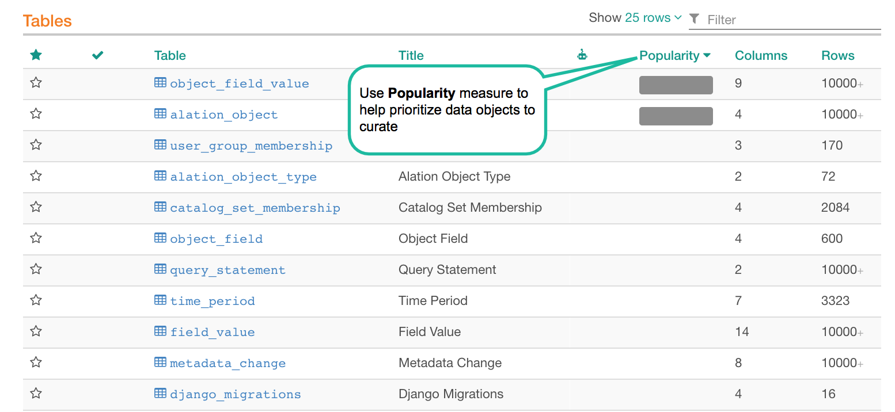
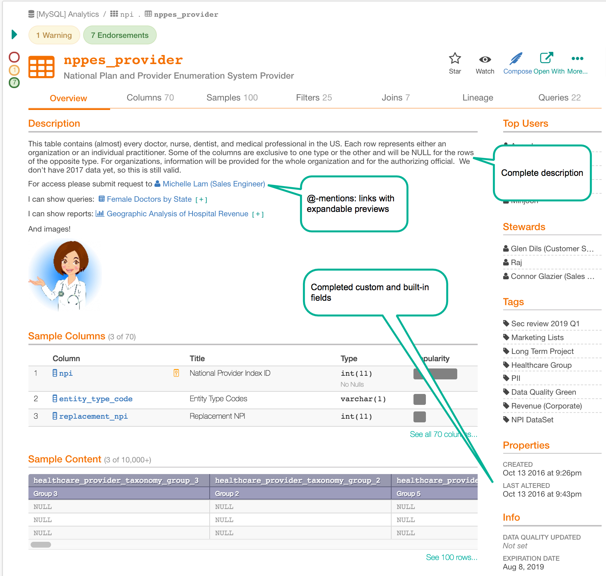
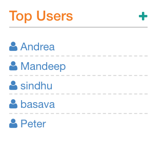

Curate Catalog Pages to Clarify Your Data¶
Alation Cloud Service Applies to Alation Cloud Service instances of Alation
Customer Managed Applies to customer-managed instances of Alation
Catalog pages hold information about a company’s data objects, including its data sources, schemas, tables, columns, directories, files, queries, and BI content. For each data object, the catalog page includes title, description, and fields for additional information. All catalog pages, except for queries, have templates that can be customized with custom fields.
Catalog pages are the primary way that Alation conveys specific data object information to its users. With Alation, information about data is documented in one place, reducing the need to rely on institutional knowledge for users to gain an understanding of their data sources.
Some of the ways we have seen customers curate catalog pages:
Documenting queries so new or inexperienced analysts can understand and re-run existing queries.
Curating data sets so that key resources are not asked the same question repeatedly.
Best Practice #1 - Prioritize catalog pages to curate¶
After data sources are connected and metadata extracted, there may be many tens of thousands of catalog pages. Companies should prioritize the catalog pages based on business criticality, complexity, and usage.
Business criticality can be assessed based on the importance of the data set to the business. This is likely to be data sets that meet high-level corporate objectives, such as revenue enhancement, cost savings, or regulatory compliance.
Another driver for prioritization is complexity. For instance, if a data set generates an outsized number of questions, it should be considered for priority curation so that critical resources do not need to answer the same questions repeatedly.
Another driver of prioritization is how often a data set is used. Alation’s Query Log Ingestion will measure the relative use of schemas, tables, and columns. Alation presents the results in the “popularity” bar for each data object. High usage catalog pages are a natural place to focus efforts.
Object Popularity
{kind=link}
Best Practice #2 - Create custom templates for each type of catalog page¶
Carefully consider the information requirements for each type of catalog page. The information contained on catalog pages serves two purposes:
Help to find data elements.
Define the data elements when found.
To help users find data elements, think about how the typical user would search for what he or she is looking for. As an example, if users are searching based on certain geographies then there should be a custom field for region so that when users do advanced searches they can quickly narrow their search. Other custom fields should be added that will aid either in both free text search and advanced search.
After users have found the catalog page for the data element they are looking for, the custom template should include fields that provide all of the information that a typical user would need. For example, if users are concerned with data that is personally identifiable, there could be a PII field that has a multi-picker indicating “PII” or “Non-PII” or “Unclassified”. As another example, we have a pharmaceutical company that has a custom field for “molecule” so that its analysts know that they are working with the data set relevant for their drug investigations.
To create the custom template, a core team of knowledgeable users should convene in workshops and come to agreement on the custom fields that should be included for each type of catalog page for both searching and data clarification.
Best Practice #3 - Start with a small number of gold standard catalog pages¶
After the templates are defined, the core team should set out to create a small number of catalog pages for each type that will serve as the “gold standard” or model for other stewards to follow when curating a catalog page.
Virtually all catalog pages will include a description of the data object. Descriptions should be complete and to the point. Including descriptive commentary for data objects will enhance search results and enable self-service. The descriptions should leverage the power of Alation by making links to other parts of the catalog, including articles, related catalog pages, as well as external links, where appropriate. Additionally, links should be included to subject matter experts who have knowledge that is complementary to the assigned stewards.
For schemas, tables, and columns, Alation may try to assign natural language names based on the machine language names captured during metadata extraction. For the gold standard catalog pages the titles should either be confirmed or entered.
Finally, all built-in and custom fields should be completed.
Sample Curated Catalog Page
{kind=link}
Best Practice #4 - Assign stewards to curate top priority catalog pages¶
Stewards should be selected based on their knowledge of the data sets covered by the catalog pages. Good candidates for stewards may be Top Users of the data set, which Alation identifies during Query Log Ingestion. Email the proposed stewards and explain their responsibilities, and include links to the gold standard catalog page.
Top Users
{kind=link}
Best Practice #5 - Set and re-visit goals¶
The goals for curation of catalog pages will vary considerably by organization, driven by the number of data objects to be cataloged as well as the capacity of the people on the team. Whatever the organization’s particular goals, the core team should communicate the goals for the extended team as well as goals for the individual stewards.
One approach to goal setting could be based on a segmentation of the prioritized data objects. For instance, an organization could set as its goals to document 100% of critical items, 80% of important items, and 20% of the other data objects. You should breakdown these organization-wide goals to the individual curators who will be doing the documentation.
Whatever the organization’s goals are initially, they are likely to change over time and should be re-visited periodically. As new data sources are added, you will need to add these to the mix, prioritize, and assign to stewards.